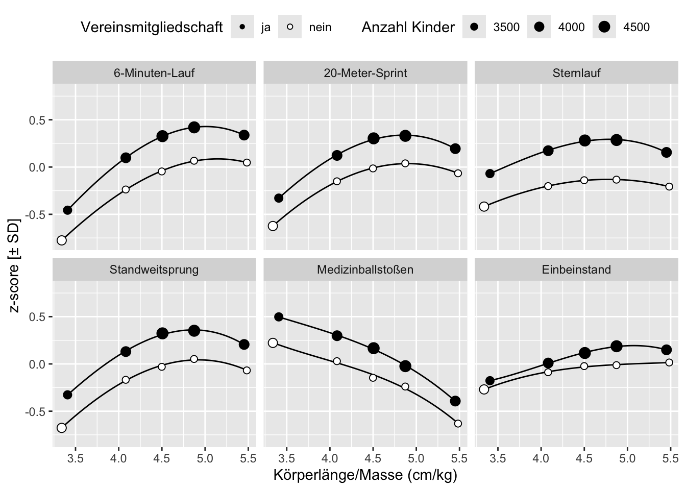

Testergebnisse in Abhängigkeit von Konstitution und Vereinsmitgliedschaft
Zusammenfassung
Testergebnisse in Abhängigkeit vom Verhältnis Körperlänge/Masse und Vereinszugehörigkeit.
Daten zur Abbildung
Aktualisierungen
- 2024-06-12: erste Veröffentlichung
- 2022-10-20: Erste Abbildungen
Wiederverwendung
Zitat
Bitte zitieren Sie diese Arbeit als:
Wöhrl, T., & Bähr, F. (2024, June 12). Testergebnisse in
Abhängigkeit von Konstitution und Vereinsmitgliedschaft. https://bekigeki.github.io/014.html